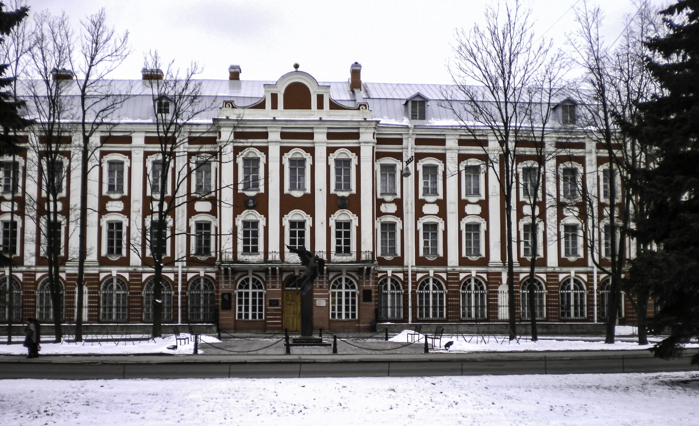
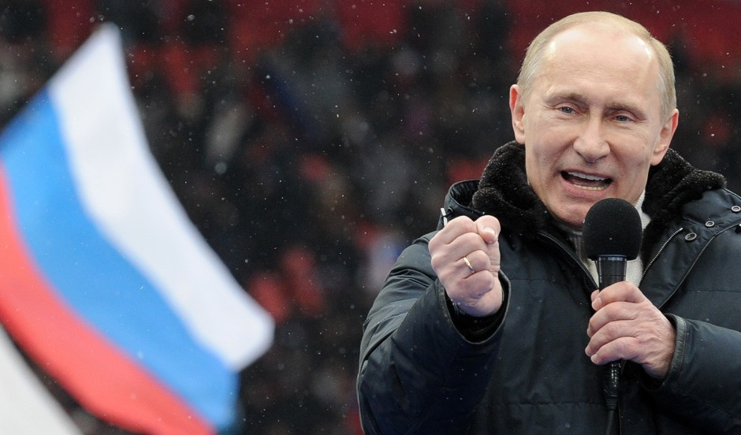

Introduction
Vladimir Putin, the President and former Prime Minister of the Russian Federation, is one of the most powerful people alive today.
- Born in Leningrad, October 7th, 1952
- Served as Prime Minister of Russia twice, 1999-2000 and 2008-2012
- Served as President of Russia twice, 2000-2008 and 2012-Present
History
Early Life
Vladimir Vladimirovich Putin was born in Leningrad (now St. Petersburg) on October 7th, 1952. His father served in the Soviet Navy and Secret Police in the 1930s and through WWII.
Above: St. Petersburg State University
In 1970, Putin entered Saint Petersburg State University studying law. He joined the Communist Part of the Soviet Union until 1991.
Rise to Power
In 1975, upon graduating from university, Putin joined the KGB, training at the 401st KGB school in Okhta, Leningrad. From 1985 to 1990 he served in East Germany, adopting a cover identity as a translator. When the Communist East German government collapsed in 1991, Putin returned to Saint Petersburg.
In June 1991, Putin becae the head of the Committee for External Relations of the Saint Petersburg Mayor's Office. Although investigated for corruption, he remained in office until 1996, and held several other offices as well.
From 1996 to 1997, Putin served as a Deputy Chief of the Presidential Property Management Department. From 1997 to 1998, Putin served as deputy chief of Presidential Staff; from 1998 to 1999 Putin served as the director of the Federal Security Service, the successor to the KGB.
In 1999, Putin was appointed the Prime Minister of the Russian Federation by President Boris Yeltsin. In 1999, Yeltsin resigned his office of President and Putin became the acting president. Putin won the 2000 elections and was inaugurated on May 7th, 2000.